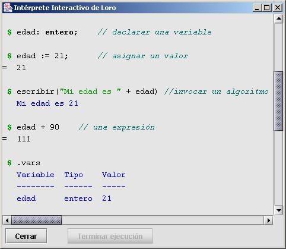

Esta característica se constituye en un excelente medio para conocer el lenguaje.
Todo lo que se escriba al frente del indicador $ se toma como código Loro. Además, se reconocen algunos comandos especiales ("meta-comandos") cuando se escribe una acción que comienza con el símbolo punto ('.'). Estos meta-comandos sólo los entiende el propio intérprete interactivo y son los siguientes:
.? - Muestra esta ayuda
.limpiar - Limpia (borra el contenido de) la ventana
.vars - Muestra las variables declaradas hasta el momento
.borrar ID - Borra la declaración de la variable indicada
.borrarvars - Borra todas las variables declaradas
.modo - Muestra el modo de interpretación actual.
Hay dos modos de operación:
ejecución completa (por defecto)
- sólo compilación
.cambiarmodo - Intercambia el modo de interpretación
.verobj nivel - Pone maximo nivel para visualizar objetos
.verarr long - Pone maxima longitud para visualizar arreglos
.gc - Hace un reciclaje de la memoria no en uso
.version - Muestra información general sobre versión del sistema